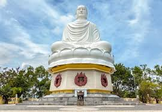

Long Son Pagoda, also known as Chua Long Son, is situated on the foothill of Trai Thuy Mountain in the city of Nha Trang. The temple is famous for its large white Buddha image, which sits at top the mountain crest and can be seen from anywhere in town. Built in 1886 in the style of Taoist architecture, Long Son Pagoda has been home to many high-ranking Buddhist monks and the Vietnam Buddhist Studies Foundation was founded here in 1936.
Read more at:
Long Son Pagoda